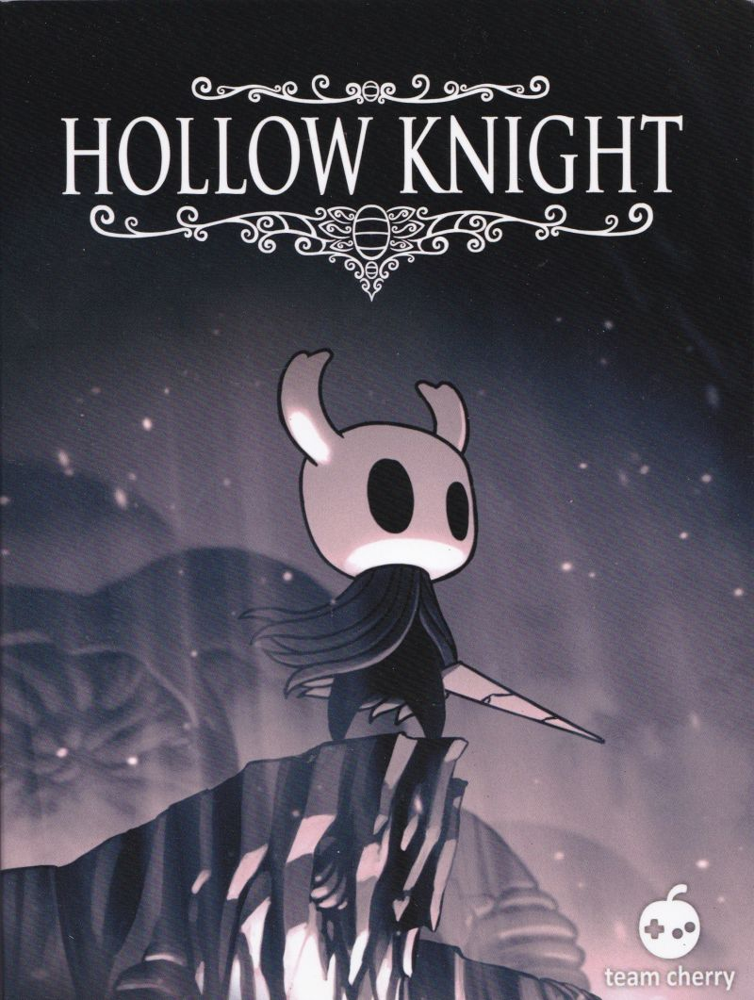

The good
Consumer to company relations are great for everyone involved when done properly from the start, especially for a new franchise. Arguably just as important is maintaining that trust with future releases.
Team Cherry, as a very small indy team working on their first game, knew this when making Hollow Knight. With a crowdfunding campaign and a new team with little experience or fame, Team Cherry created a satisfying experience.
From the outset, “the side-scrolling action platformer was successful and critically celebrated, though it flew under the radar of some websites during a spring that featured the launch of a new Nintendo console and an overwhelming bounty of fantastic games.”[1]
First impressions are important, so the fact that Team Cherry started with a complete game, only adding extra non-critical content as free dlc post-release gave an trustworthy impression. Players could trust this team to give them complete experiences, not half-baked ones.

Once a series or developer has a loyal following, they can afford to spend and utilize that trust. This was true in the case of Super Smash Bros. Ultimate, the most recent entry in the widely successful Smash Bros. franchise.
While this game had a lot of content at launch, several staples of the series such as the stage builder were missing at launch, only to be added back in later as free dlc.[2] However, since Super Smash Bros. had already gained the loyalty and trust of consumers, players didn't mind. Even without these missing features, Famitsu gave Super Smash Brothers Ultimate their game of the year award.[3]